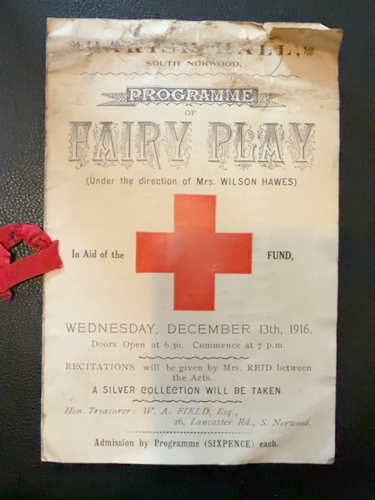

The Enchanted Rose — a Hawes family production
Two surviving pages of a programme record a fairy play staged in South Norwood on Wednesday 13 December 1916 to raise money for the Red Cross Fund. It was directed by Mrs Wilson Hawes, who was also credited as the playwright. Family testimony identifies her as Mary Ellis, wife of William Edward Wilson Hawes and mother of Walter Joseph William Hawes.
Programme cover

Programme image unavailable. Please check the latest deployment.
Venue: The programme heading appears to read “Memorial Hall, South Norwood” (verify against the original).
Date: Wednesday, 13 December 1916. Doors opened at 6:30pm and the performance began at 7pm.
Purpose: In aid of the Red Cross Fund, with a silver collection. Admission by programme cost sixpence.
Direction: Mrs Wilson Hawes. Recitations between acts by Mrs Reid.
Honorary treasurer: W. A. Field, Esq., 26 Lancaster Road, South Norwood.
The Enchanted Rose — cast and credits
The play is expressly credited as written by Mrs Wilson Hawes. The cast list includes the following Hawes family names, alongside other local performers.

Cast-page image unavailable. Please check the latest deployment.
| Part or responsibility | Printed name |
|---|---|
| King | Miss Gladys Hawes |
| Bill Bailey, bodyguard to the King | Mr Jack Hawes |
| Army | Master Eric Hawes |
| Servant | Miss Annie Hawes |
| Mrs Spicer | Miss Edith Hawes |
| Gretchen | Miss Bessie Hawes |
| Pianist | Mrs Henry Hawes |
| Author and director | Mrs Wilson Hawes |
The programme also names Hilda Brown, Kathleen Field, Marie Ashton, Maisie Rossetter, Jack Brown, Marjorie Brown, Ella Russell and other children. Kathleen Field arranged the dances.
Family identifications: The family identifies Gladys, Jack, Annie, Edith and Bessie Hawes as Walter Joseph William Hawes's siblings. Eric Hawes is Walter's son, while Mrs Wilson Hawes is Walter's mother, Mary Ellis. Some performers may have used familiar rather than registered names, so their birth-record identities will be cross-checked before further names are merged.
Family identification and research value
The name “Mrs Wilson Hawes” is consistent with the use of her husband's middle name in social identification: William Edward Wilson Hawes. The family identifies her as Walter's mother, Mary Ellis. The family also reports that Walter had eleven siblings, making twelve children altogether in that household. The revised Findmypast GEDCOM currently lists seven children including Walter; this family account therefore indicates at least six siblings are missing from that export or need reconciling against other names and records.
Eric Hawes is listed as “Master Eric Hawes”. He would have been about seven years old in December 1916, consistent with the birth registered in 1909. The older Gladys Hawes mentioned as a performer should not automatically be confused with Eric's sister Gladys Madeline Hawes, born in 1913, who would have been approximately three.
Archive details
Document: Two pages from an original family-held programme.
Event: South Norwood fairy play, 13 December 1916.
Production: The Enchanted Rose, written by Mrs Wilson Hawes.
Provenance: Family photographs supplied 7 November 2026.